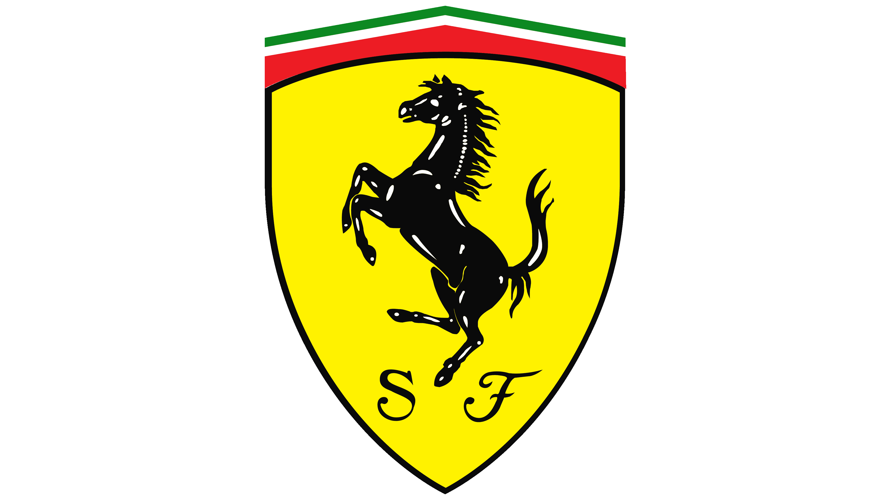

Ferrari
Evaluating Ferrari's long-term strategy to balance growth with brand exclusivity.
Context
This corporate strategy case study examines Ferrari's long-term approach to sustaining competitive advantage in the global luxury automotive market. Unlike traditional auto manufacturers that compete on scale and volume, Ferrari operates under a deliberate scarcity model that prioritizes brand equity, exclusivity, and profitability over growth. The work explored how Ferrari balances demand management, product strategy, and innovation while navigating industry shifts such as electrification, regulatory pressure, and evolving consumer expectations.
Goals
The primary goal was to evaluate how Ferrari sustains long-term competitive advantage through deliberate scarcity, brand positioning, and disciplined growth. Secondary goals included assessing the strategic implications of electrification and regulatory change, understanding how innovation fits within Ferrari's exclusivity model, and identifying risks to brand equity as the automotive industry continues to evolve.
How I Worked
The analysis was framed as a top-down corporate strategy assessment, examining how Ferrari's business model, competitive positioning, and operating choices reinforce long-term brand value. I analyzed Ferrari's approach to demand management, product portfolio decisions, and innovation strategy, and evaluated how external forces such as electrification and regulation could pressure its scarcity-driven model. I worked with the team to synthesize these insights into a coherent strategic narrative and articulate implications for Ferrari's future positioning through a structured written analysis and presentation.
Key Decisions & Tradeoffs
A central strategic choice examined was Ferrari's commitment to deliberate scarcity rather than pursuing higher production volumes to capture broader market demand. This approach prioritizes brand equity, pricing power, and long-term profitability while accepting slower unit growth and limited market share. Another key tradeoff involved Ferrari's approach to electrification, balancing the need to innovate and meet regulatory requirements with preserving the performance, sound, and emotional attributes that define the brand's core identity.
Impact
The analysis clarified how Ferrari's scarcity-driven model supports its sustained competitive advantage and long-term profitability in the luxury automotive market. The work articulated the strategic implications of industry shifts such as electrification and regulation, highlighting how Ferrari can adapt while preserving brand equity and exclusivity. The final output delivered an executive-ready perspective on the risks and tradeoffs Ferrari faces as it balances innovation with its core identity.
What This
Project Shaped
This work strengthened my ability to evaluate long-term competitive advantage through a corporate strategy lens, balancing growth, brand equity, and profitability. It sharpened my judgment around analyzing executive-level tradeoffs, particularly where strategic restraint and disciplined decision-making are central to sustaining differentiation over time.